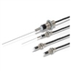
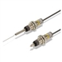
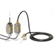

Building Automation
Industrial Automation
Power Automation & Safety


Bangladesh Distributor
Touch Switches
OMRON provides Touch Switches with a high contact reliability for microloads and solid-state Touch Switches cylindrical or limit-type actuators.
Touch Switches List
There are 3 products of Touch Switches.
 Mechanical Touch Switch D5B
Detects Objects in Multiple Directions with High Sensitivity, Ideal for Robotics
 Touch Switch D5C
Unique 18-mm-dia. Capacitive Touch Switch with Choice of Three Actuators is Activated with Only a Very Slight Physical Contact
 Limit Touch Switch NL
Object Actuates Switch and Turns Built-in Monitor Indicator ON
Related Contents
- Limit Switches